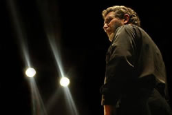

Richard McIntyre sustains a long and distinguished career as bassoonist, music educator, conductor and arranger, and has focussed this considerable breadth and diversity on his work at the ANU School of Music for over a quarter of a century. One of Australia’s most respected and successful bassoon teachers at all levels, his teaching places great emphasis on the establishment of a close personal relationship with each one-to-one student, and on the development of a thorough understanding of the instrument and its techniques, the specifics of musical fabric and effect, and the various musical functions which the bassoon fulfils in varied styles and repertoires. This approach has yielded a remarkably high proportion of graduates who have established successful full-time careers as professional musicians both within Australia and overseas, as members of prominent orchestras, free-lancers, specialists in historically-informed performance on period instruments, instrumental teachers, and members of the armed services.
A composition graduate from the University of Sydney and having studied the bassoon privately with John Cran, Richard was for 10 years Associate Principal Bassoonist with the Sydney Symphony Orchestra before moving to Canberra in 1978. He is a foundation member of the renowned wind quintet, The Canberra Wind Soloists (Australia’s most long-lived professional chamber ensemble), with whom he has recorded CD’s and toured extensively abroad. He has been Guest Principal and concerto soloist with the SSO and other Symphony Australia orchestras, the Australian Chamber Orchestra, and has performed with the Australia Ensemble and numerous other prominent chamber groups. His association with the Canberra Symphony Orchestra as its Principal Bassoonist dates back to 1965. His recital repertoire has included works from the 16th century to the multiphonic avant-garde. Richard’s teaching endeavour has extended throughout Australia and into Asia, and has included much work with Youth Music Australia and its predecessors over some 30 years. He has contributed significantly to the bassoon’s pedagogic repertoire with numerous transcriptions and arrangements, and has won high international acclaim for his monumental arrangements of large-scale orchestral works for The Canberra Wind Soloists, giving them a distinctively unique repertoire. His work as a youth orchestra conductor has yielded Canberran of the Year, Sounds Australian and Advance Australia awards; he was granted an Order of Australia Medal in 1992. School of Music faculty member since 1978.
Copyright Barrier Reef Orchestra, 2017. All rights reserved.